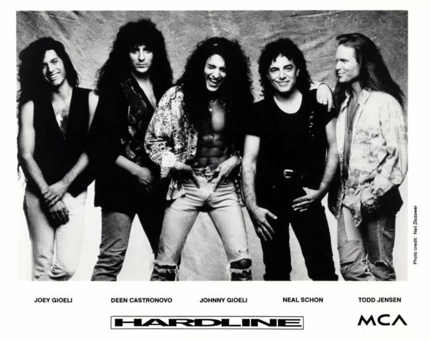
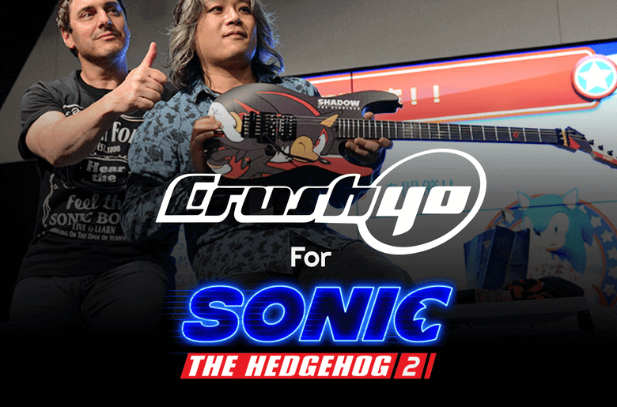
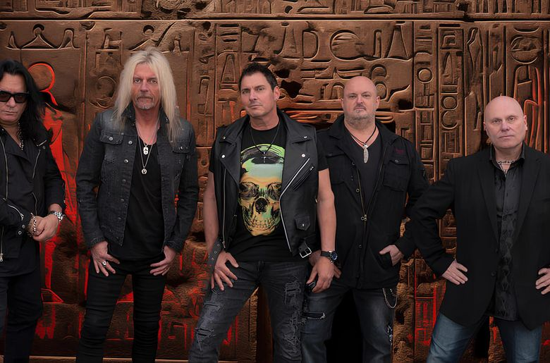
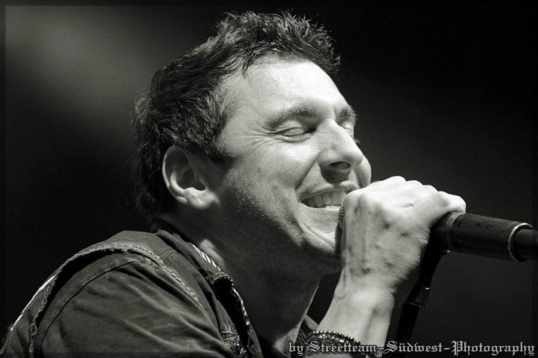

About Johnny Gioeli
Johnny Gioeli is an American singer and songwriter, best known as the lead vocalist for the bands Hardline, Crush 40, and Axel Rudi Pell. With a career spanning over three decades, Johnny has become a well-respected figure in the rock and metal music scenes, recognized for his powerful voice and dynamic stage presence.
Born and raised in Brooklyn, New York, Johnny began his musical journey at a young age, inspired by the rock legends of the 70s and 80s. He first gained prominence as the frontman of the band Hardline, whose debut album, "Double Eclipse," released in 1992, became an instant hit among rock fans.
In addition to his work with Hardline, Johnny is also widely known for his collaborations with the German guitarist Axel Rudi Pell, as well as his role as the vocalist for the video game band Crush 40, which has a dedicated fanbase thanks to their contributions to the Sonic the Hedgehog video game series.
Throughout his career, Johnny has continued to evolve as an artist, exploring various musical styles while maintaining his roots in rock and metal. His dedication to his craft and his fans is evident in every performance, whether he's on stage with his bands or working on solo projects.
Johnny's passion for music extends beyond his performances; he is also actively involved in mentoring and supporting young musicians, helping them navigate the complexities of the music industry.
